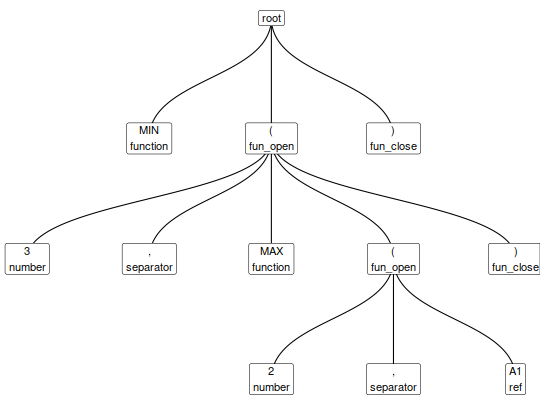

Requires the igraph and ggraph packages, which you
can install with install.packages(c("igraph", "ggraph")). Draws a
simple tree plot of the parse tree, showing parent-child relationships,
tokens and types.
The utility functions xlex_edges(), xlex_vertices(), and xlex_igraph()
compute each stage in plotting the final graph.
plot_xlex(x) xlex_edges(x) xlex_vertices(x) xlex_igraph(x)
| x | parse tree from |
|---|
tidyxl::xlex(), tidyxl::demo_xlex()
#> from to #> 1 0 1 #> 2 0 2 #> 3 0 11 #> 4 2 3 #> 5 2 4 #> 6 2 5 #> 7 2 6 #> 8 2 10 #> 9 6 7 #> 10 6 8 #> 11 6 9xlex_vertices(x)#> id label type token #> 1 0 root root root #> 2 1 MIN\nfunction function MIN #> 3 2 (\nfun_open fun_open ( #> 4 3 3\nnumber number 3 #> 5 4 ,\nseparator separator , #> 6 5 MAX\nfunction function MAX #> 7 6 (\nfun_open fun_open ( #> 8 7 2\nnumber number 2 #> 9 8 ,\nseparator separator , #> 10 9 A1\nref ref A1 #> 11 10 )\nfun_close fun_close ) #> 12 11 )\nfun_close fun_close )if (interactive() && require(igraph, quietly = TRUE)) { xlex_igraph(x) }#> #>#> #> #>#> #> #>#> IGRAPH DN-B 12 11 -- #> + attr: name (v/c), label (v/c), type (v/c), token (v/c) #> + edges (vertex names): #> [1] 0->1 0->2 0->11 2->3 2->4 2->5 2->6 2->10 6->7 6->8 6->9if (interactive() && require(igraph, quietly = TRUE) && require(ggraph, quietly = TRUE)) { plot_xlex(x) }#> #>